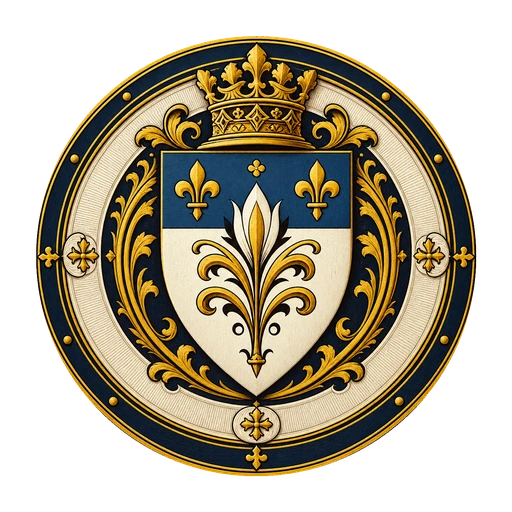

Lothir · Das kaiserliche Erbe
Großherzogtum
Aldingen
Silber im Berg.
Ehrgeiz im Blut.
- Häuser & Clans
- 23
- Benannte Orte
- 11
- Gebiete
- 4 Grafschaften
+ herzogliche Domäne

01 · Herkunft & Selbstverständnis
Verwandte Länder.
Ein eigener Anspruch.
02 · Die farbigen Gebiete
Vier Grafschaften und die eigene Domäne.
Die Grafschaften werden in diesem Entwurf nach ihrem benannten Hauptort bezeichnet. Jede erhält ein gemeinsames Schild. Die elf rot abgegrenzten Teilgebiete besitzen eigene Schilde; Klingenhagen verwendet für seine herzogliche Grafschaft und Baronie dasselbe.
03 · Häuser & Sitze
Wer könnte wo sitzen?
Noch ohne Sitz
Offene Familienzuordnungen
Die neuen Häuser und Clans sowie die übrigen gelieferten Familien beginnen hier. Ein platziertes Wappen kann hierher zurückkehren, um seinen Sitz wieder offenzulassen.
04 · Die einzelnen Landkreise
Gebietsschild, Ort und Familien.
Ein Schild öffnet den Gebietsentwurf. „Wappen & Krieger“ zeigt Hauswappen, Ganzkörperfigur und vorgeschlagene Klasse. Die Familienanordnung folgt deinem aktuellen Vorschlag.
Deinen Vorschlag mitnehmen.
Der Entwurf bleibt in diesem Browser erhalten. Zurücksetzen stellt die vier genannten Ausgangssitze wieder her und lässt alle übrigen Familien offen.